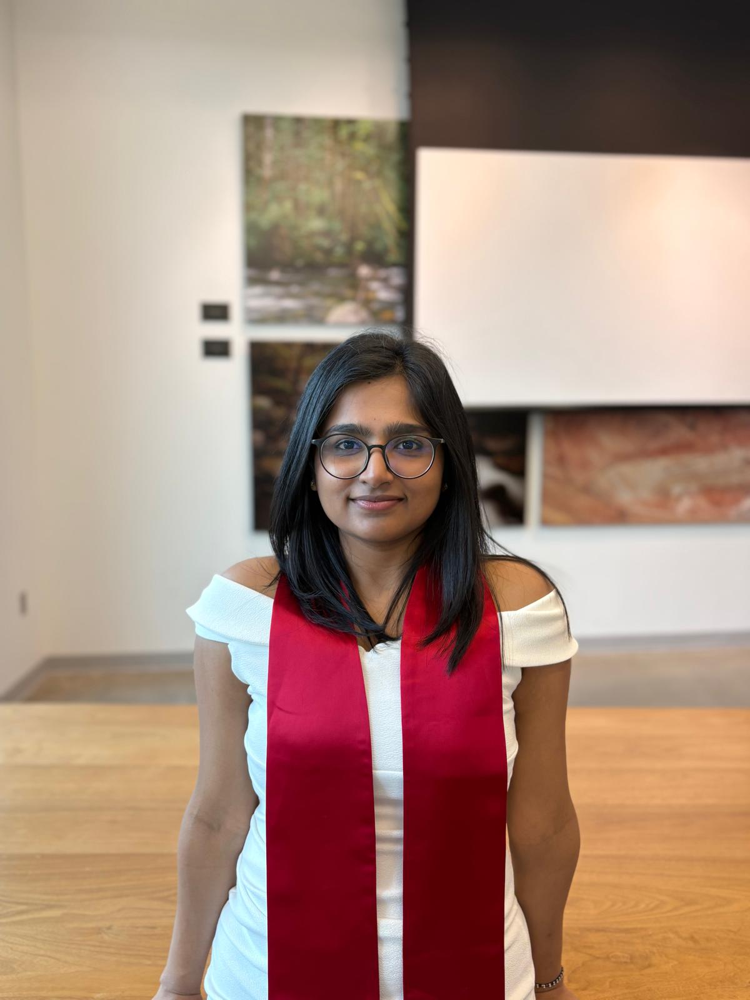

LREC 2026 · LLM safety
Gradient-Controlled Decoding
A training-free guardrail using acceptance and refusal anchors to detect unsafe prompts and steer the start of decoding.
Applied Scientist · Amazon Ads, Sponsored Products
I am an Applied Scientist at Amazon Ads building multi-agent systems for sponsored products. My research focuses on secure and reliable LLM agents, from code-security benchmarks and runtime guardrails to reasoning and search systems.
Previously at Amazon Alexa Trust, I led the deployment of runtime defense models protecting Alexa from indirect prompt-injection attacks. Before that, I was an AI Research Intern at the Sentient Foundation, where I worked on deep search agents and agentic orchestration for Open Deep Search.
I hold an M.S. in Computer Science from the University of Maryland, College Park and a B.Tech. from IIT Roorkee.
Download CV
A training-free guardrail using acceptance and refusal anchors to detect unsafe prompts and steer the start of decoding.
A 318-task benchmark across 27 C/C++ repositories that evaluates both functional correctness and security of code completions.
An open-source search tool and reasoning agent for complex questions, evaluated on SimpleQA and FRAMES.
Scroll for older updates ↓

Building multi-agent systems for Sponsored Products, automating campaign optimization for 1M+ advertisers. Deployed Alexa+ safety model on vLLM handling 80M+ daily requests at 35ms P90, peaking at 70K TPS.
Built Open Deep Search — a reasoning agent achieving SOTA 75.3% on FRAMES, outperforming GPT-4o Search Preview by 9.7%. Developed the CodeAct orchestration layer and an HPO pipeline cutting fine-tuning iterations by 30%.
Engineered inference-time safety steering via classifier gradients — 20% reduction in Attack Success Rate, 50% fewer false refusals. Research accepted at AMLC 2024 and LREC 2026.

Optimized C++ BGP routing modules for Google peering traffic, resolving critical concurrency bottlenecks to drive a 16% revenue increase for the XR Business Unit.
Scroll for earlier experience ↓